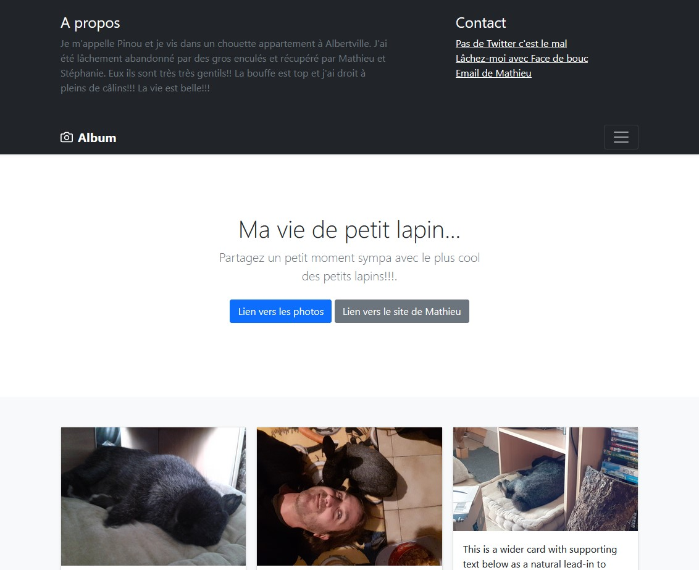
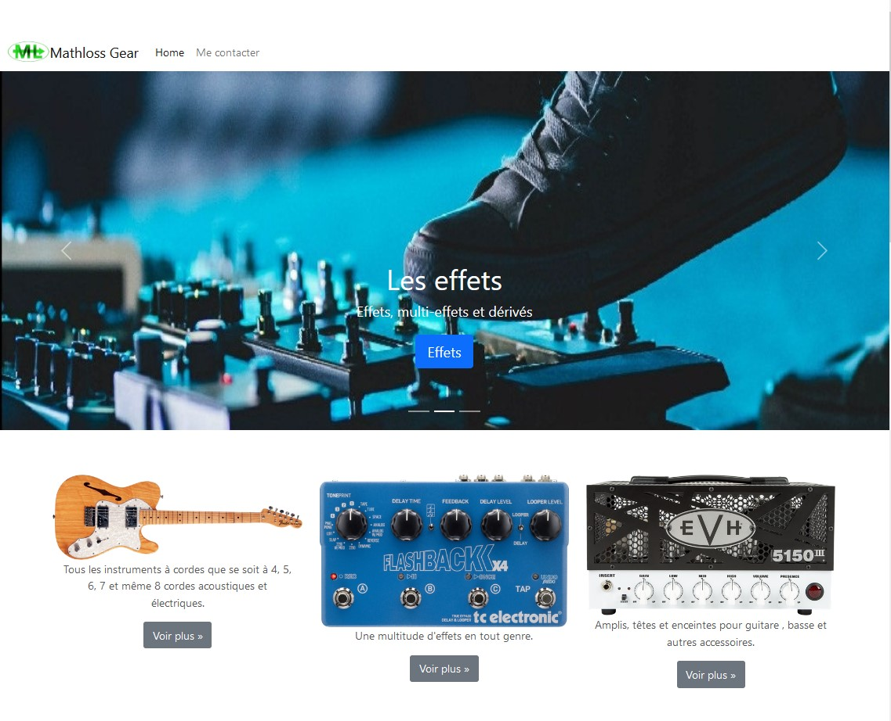

Mathieu Losserand
Ces sites sont une application pratique de mon apprentissage de Bootstrap.
Ces sites m'ont permis de mettre en place une nouvelle façon de concevoir une interface de site en apportant des concepts plus "modernes" et dynamiques.
J'ai pu utiliser les navbars, les carroussels, les cards et tous les avantages que peut apporter Bootstrap.
Technologies utilisées : HTML, CSS, Bootstrap
|  |
| Site album |
|  |
| Site carroussel |